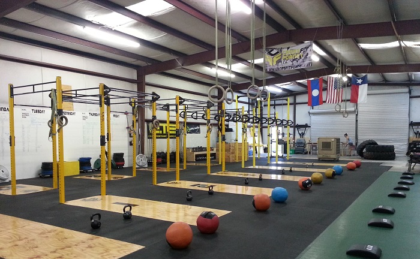

Crossfit es un sistema de entrenamiento orientado al acondicionamiento y fuerza aplicando ejercicios funcionales realizados a alta intensidad, incluyendo ejercicios de disciplinas como halterofilia y gimnasia, para realizar estos ejercicios se necesita de un equipo especial que se suele encontrar en los gimnasios especializados en esta modalidad llamados box en el cual normalmente hay un entrenador que determinara los circuitos y la modalidad que se realizara.
Maximo numero de repeticiones en un tipo limite establecido
Trabajar un ejercicio por un tiempo determinado (ON) y descansar en otro (OFF)
Con un numero de rondas establecido
Completar una serie de ejerccios en el menor tiempo posible
Serie de ejerccios con multiples rondas con un patrón ascendente o descendente
en numero de repeticiones
En el caso del CrossFit como es un deporte en cual se necesita una gran variedad de equipo lo mejor es ir a un lugar especializado en esta modalidad como son los conocidos box de crossfit allí se podrá contar con personal calificado y con experiencia que podrán explicar e indicar cual es la mejor forma para progresar dependiendo del nivel de cada persona
De igual manera unos concejos útiles para evitar lesiones y disfrutar de la mejor forma todos los entrenamientos es centrarse en aprender bien la técnica, prestar atención a los errores que se suelen cometer e ir forma calmada con un manejo de pesos prudentes.
En estos videos encontraremos recomendaciones claves para los ejercicios fundamentales más demandantes y complejos